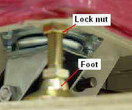

This procedure provides instructions for removing the DxI instrument from a cardboard shipping crate.
Required Materials:
- Wrench, socket, open-end, or adjustable for 3/4-in nut
-
Open the cardboard crate.
-
Remove the three plastic box straps.
-
Remove the box top.
-
Squeeze and pull the center of each plastic box latch to unlock it.
-
Release the instrument from the crate.
-
Pivot open the crate end panel and remove the long gantry box (if there is one) from the upper right side panel.
-
Remove the cardboard side panels from the wooden pallet.
-
Remove the SPU support box.
-
Remove the two ramps and place them into the notches on the end of the wooden pallet (two bolts).
-
Loosen the 3/4-in nuts on the two tie-down bolts on each end of the instrument, and then unhook the bolts from the instrument.
-
Loosen the 3/4-in lock-nuts on each of the four leveling feet. Rotate each of the feet upward 1 inch so that the instrument can roll off the pallet without catching the feet on the ramps.
Caution: Do not rotate the feet upward more than 1 inch. Moving the feet higher can damage the panel above them.

-
Remove the instrument from the crate.
-
Verify that the rear feet are not raised as high as the front feet.
Caution: Do not raise the rear leveling feet as far as the front feet. Do not force the rear feet beyond the point where restriction is felt.
Caution: The person at the rear of the instrument must take care to avoid tripping on the floor bracket near the front of the instrument.
-
Position one person at each end of the instrument.
-
Carefully push the instrument out of the crate from the rear, while pulling the instrument out of the crate from the front.
Warning: Because of the weight of the instrument (1200 lb /544 kg), use caution when moving the instrument up the ramp. To avoid personal injury or instrument damage, a minimum of two people must control the instrument as it is moved up the ramp.
-
If the instrument will remain in this location, loosen the locking nut on one of the leveling feet, and rotate the foot to the floor to prevent the instrument from rolling.
-
Remove the stretch wrap from the instrument.
The best place to cut the wrap is at the seam between the upper front covers. Cut from top to bottom, and remove the wrap.
-
Inspect the instrument exterior. Document on the service order any damage that may have been caused by shipping and handling.
-
Discard all packaging materials, including the pallet, and shipping materials.